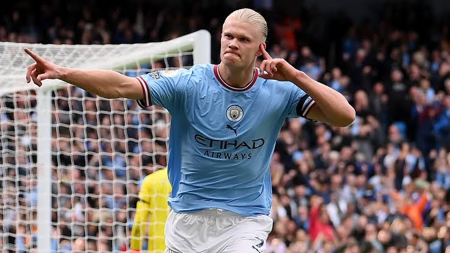

ERLING HAALAND'S THREE HAT TRICKS IN ONLY EIGHT PREMIER LEAGUE MATCHES

The Manchester city player after a disasterous defeat against manchester united on sunday claimed the match ball alonside his team mate PhIL FODEN in the ETHIHAD on sunday
therefore making him top goal scorer in the current EPl season with 14 goals in only EIGHT premier league games.
After joining Manchester city from Dortmund, the Norway striker has maintained a very perfect record in the EPL, he has been making histories and breaking histories as well.
HAALAND'S HAT TRICK STORY
Ronaldo had the highest number of hat tricks in the EPL season, but the story changed on sunday after the city and the united match at ETHIHAD where the city striker ERLING HAALAND netted three goals alonside PHIL FODEN and also assisted two of FODEN's goals
as they made the 6-3 victory on sunday against the united.
currently HAALAND has thesame number of hat tricks as Christiano Ronaldo,leaving him with 13 career hat tricks.